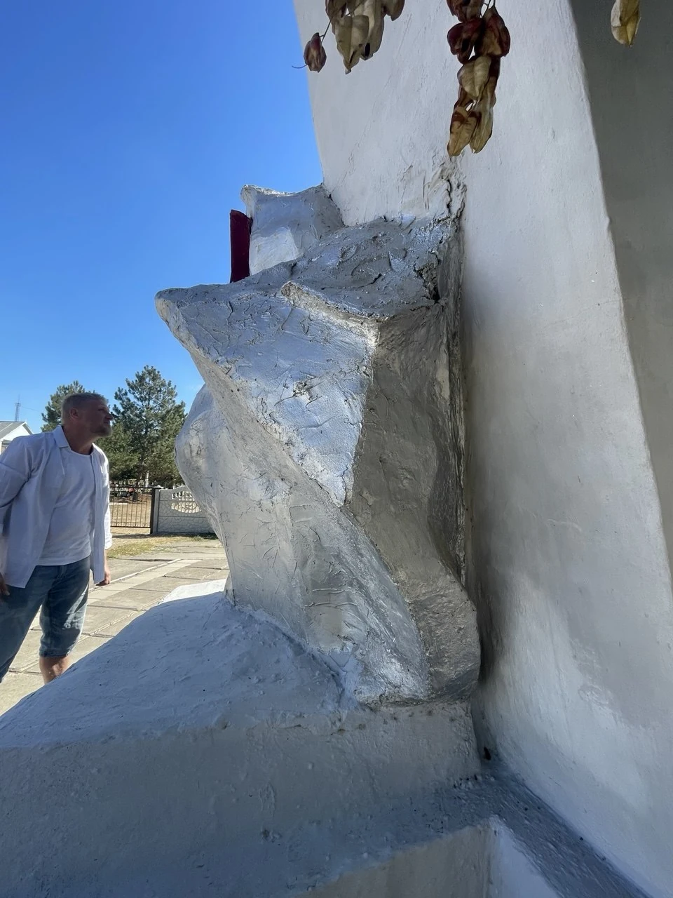
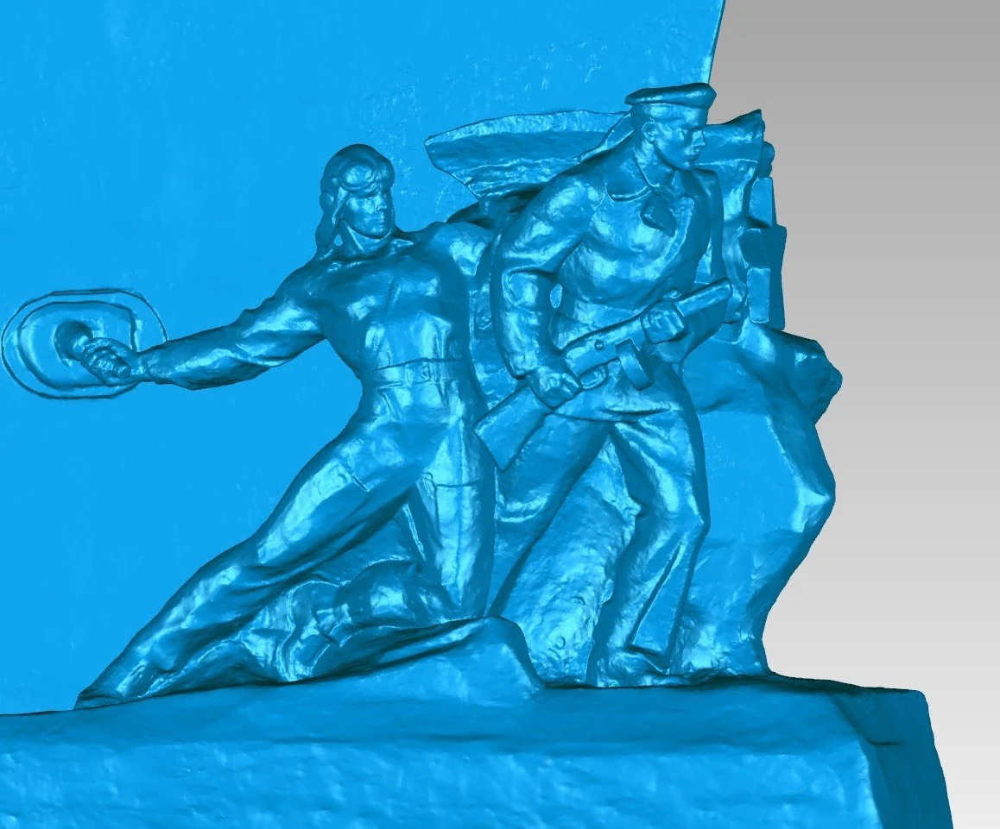
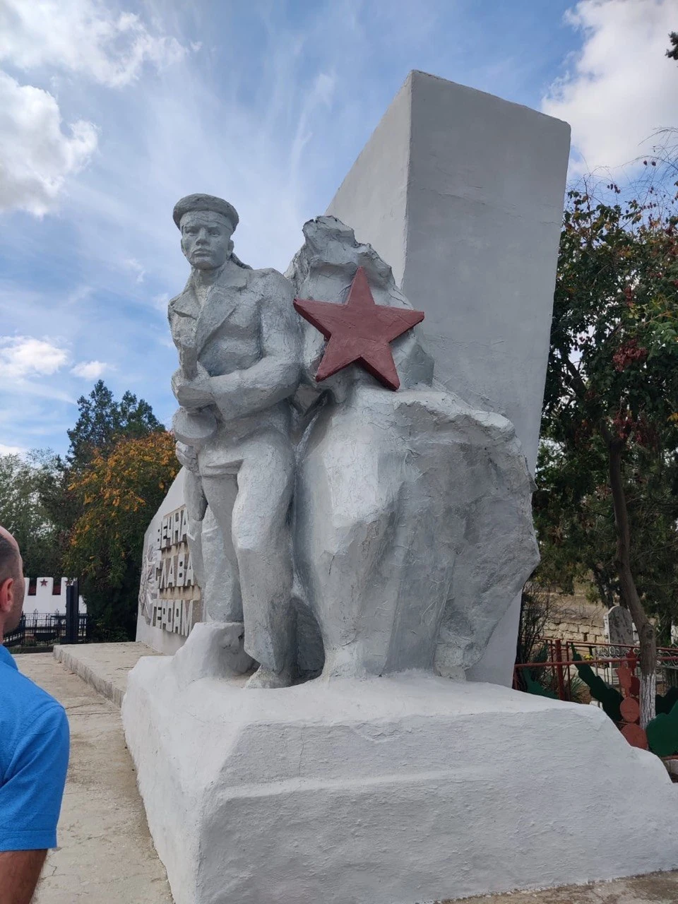

Скульптура
Восстановление утраченного
Работа с утраченной формой начинается с внимания к сохранившемуся объекту. В этом кейсе — мемориальная скульптурная композиция и её пластическая проработка в модели: силуэт, позы фигур и характер деталей. Фотографии на месте и ракурсы модели показывают разные стороны этой работы.
Мемориальная пластика / Возвращение целостности
Персональные роли участников в этом кейсе не уточнены.
Материалы проекта
6 фото · 0 видео. Видео запускается только вручную.





